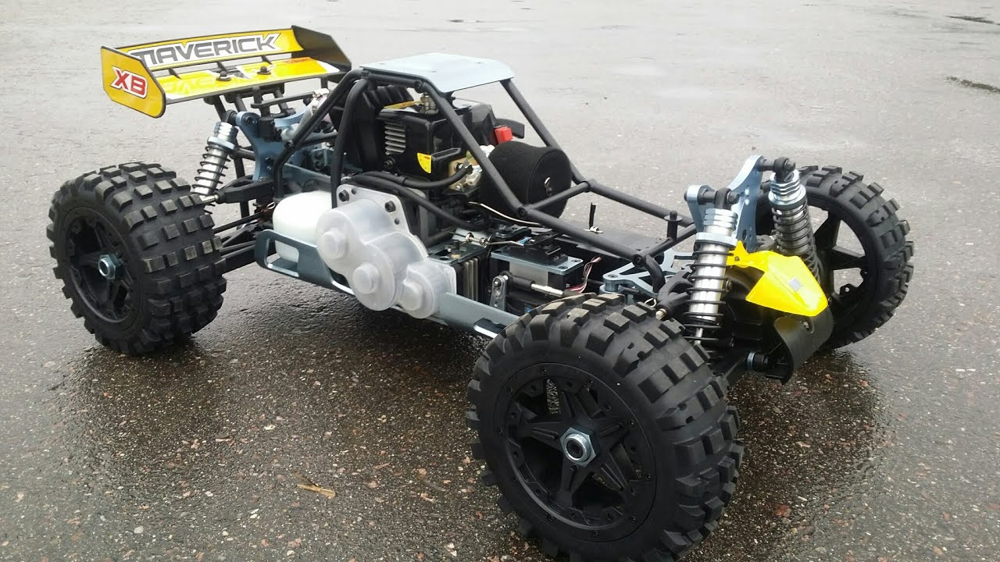
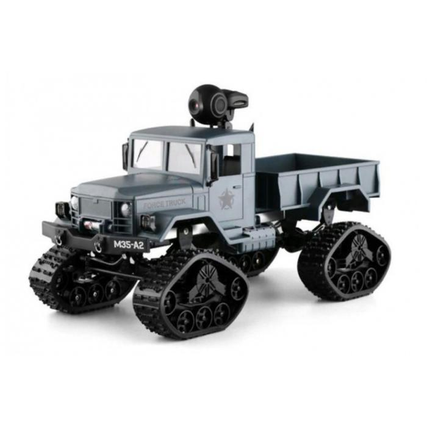
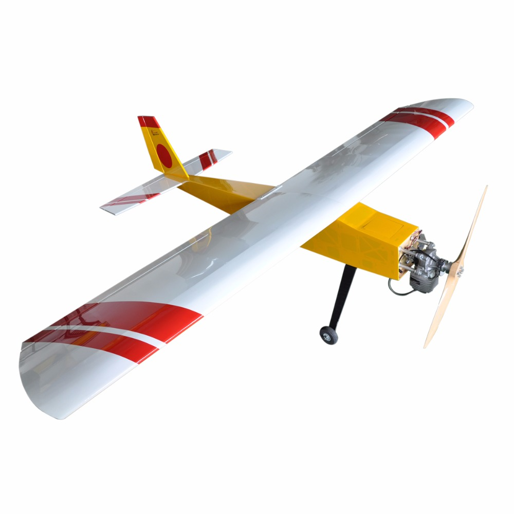
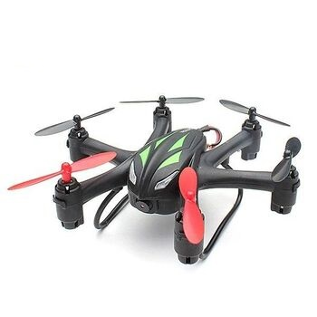
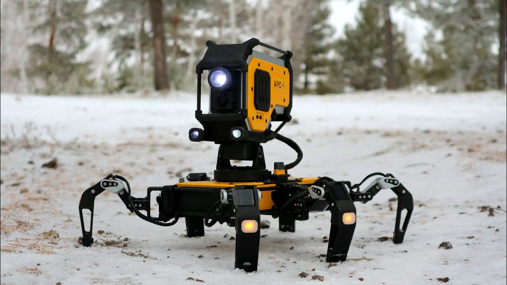

Радиоуправляемая автомодель — это уменьшаная копия, реально существующей техники с радиоуправлением. Модели могут использоватся как игрушки, только для развлечения, так и как важное оборудование, например военными или спасателями для разведки или работы в особо опасных зонах.
Классификация
- по способу передвижения: колесные, гусеничные, плавающие, летательные, шагающие
- по применению: хобби (сборка и программирование) и спортивные (для участий в соревнованиях)
- по виду: реконсткрукция (модели реально существовавщей техники) и кастомизированные (весь проект придуман с нуля автором)
- по типу привода: электродвигатель и двигатель внутреннего сгорания
Колесные модели
Самый популярный вид моделей. Существует несколько условных "уровней сложности" модели. Так в "простой" колесной модели будет двигатель и система поворота колес. Поворотная система совсем не обязательна. Вместо нее можно сделать управление по танковой схеме.
В ней для поворота колеса попарно вращаются в противоположные стороны, однако удобство управления такой моделью оставляет желать лучшего. В более сложные модели, предназначенные для гонок, так же как в настоящие автомобили ставлят подвеску, коробку передач.
Летные модели
Второй по популярности вид моделей. Летные модели в основном разделаются по виду расположения двигателей. В моделях самолетного типа двигатели распологаются горизонтально. Один центральный двигатель, который тянет всю модель вперед.
С самолетными моделями проводят соревнования вида "Воздушный бой", где на хвост целяется лента и каждый участник должен винтом срезать ленты соперников, стараясь не повередить свою.
Так же в последнее время во всю набирают популярность мультироторные модели. В них двигатели распологаются вертикально. В моделях такого типа количество моторов может менятся:
- трикоптеры - 3 мотора. Не очень популярны из-за сложности в настройке и управлении
- квадракоптеры - 4 мотора. Самый популярный вид мультироторых моделей. Научится пилотировать квадракоптер довольно легко.
- октокоптеры - 8 моторов или 4 мотора по 2 винта. По сути те же квадракоптеры, однако более грузоподъемные.
Обычные квадракоптеры могут использоватся для воздушной съемки. Гоночные квадракоптеры используются в соревнованиях типа гонка - множество квадрокоптеров летают по относительно открытой местности. Задача пилота: не разбить аппарат и прилететь к финишу быстрее остальных.Второй интересный вид совернований - трюки. В такого рода соревнованиях пилоты показывают все свое мастерство пилотирования, выполняя красивые виражи, а так же летая в очень тесных пространствах.
Шагающие модели
Весьма не популярный вид моделей. Шагающий робот или просто шагоход, выглядит как платформа с "ногами". Количество конечностей может быть от 4 до 8. Обычно не ставят больше 8 ног. От количества ног зависит скорость и плавность передвижения. Такие модели весьма медлительные, но при этом значительно тише, могут пробиратся по поверхностям, где врятли проедет колесная модель, а так же не застрянут при пробитии колеса.
На шагоход можно поставить камеру для разведывания территории, манипуляторы для подбора предметов. Так же можно установить страйкбольную турель и использовать в играх.